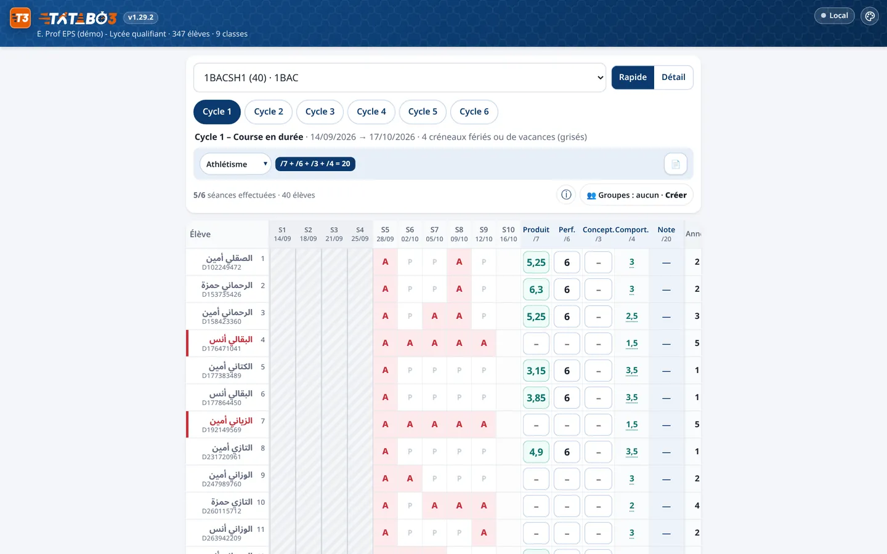
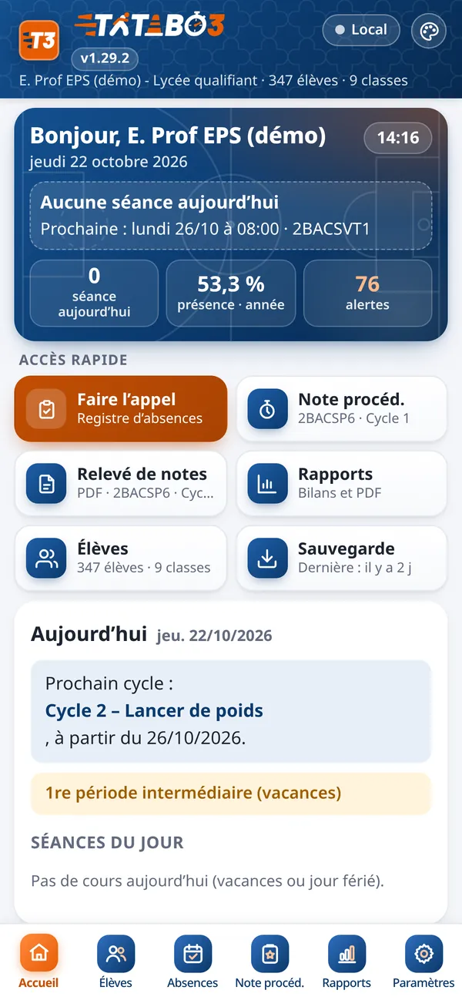
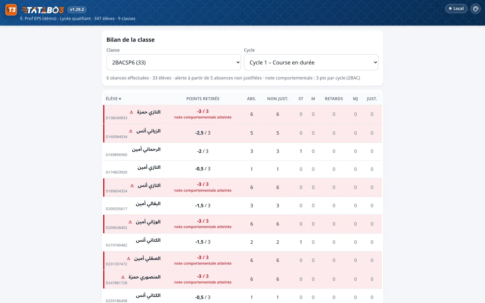
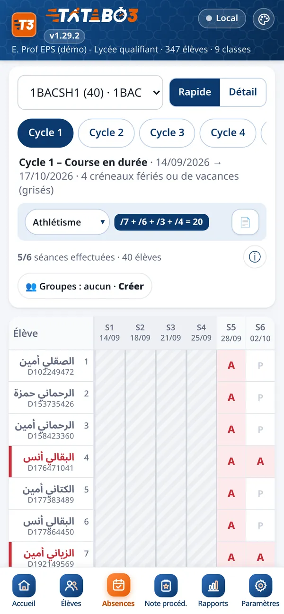

Faites l’appel, suivez les absences, les retards et les dispenses, notez vos élèves sur 20 et exportez vos bilans en PDF ou pour Excel. Sur téléphone et sur ordinateur, même sans connexion.


Une interface claire pour vous concentrer sur vos élèves, pas sur la paperasse.
Une touche par élève : absent, retard, sans tenue, malade, absence justifiée. Les élèves dispensés sont signalés.
Par cycle, par semestre ou sur l’année : séances, absences, retards, note comportementale et alertes.
Bilans et relevés en PDF A4 avec graphiques, exports CSV à ouvrir dans Excel. Noms arabes bien affichés.
Travaillez sans connexion au gymnase ou sur le terrain ; la synchronisation reprend dès le retour du réseau.


Enregistrez en quelques touches les présences, absences, retards et dispenses.
Séances, notes sur 20, tests physiques et répartition cyclique au même endroit.
Bilans PDF prêts à imprimer et fichiers CSV pour Excel.
Les professeurs d’EPS. Il n’y a pas d’inscription publique : l’administrateur crée votre compte et vous transmet vos identifiants.
Oui, l’accès est gratuit, sur invitation.
Oui : iPhone, Android et ordinateur. Ajoutez-la à l’écran d’accueil pour l’ouvrir comme une application.
Oui. Vos saisies sont enregistrées sur l’appareil puis synchronisées avec votre compte.
Votre cahier est lié à votre compte personnel. Un code d’accès (PIN ou Face ID) chiffre les données sur l’appareil, et vous pouvez télécharger une sauvegarde complète.
Oui, depuis les fichiers Massar (Excel) ou par copier-coller, avec les codes Massar.
Bilans, relevés et fiches en PDF A4, et registre, bilan annuel ou liste des élèves en CSV pour Excel.
Écrivez-nous depuis la rubrique Contact.
Emplacement réservé au témoignage d’un professeur, avec son accord.
Emplacement réservé au témoignage d’un professeur, avec son accord.
Emplacement réservé au témoignage d’un professeur, avec son accord.